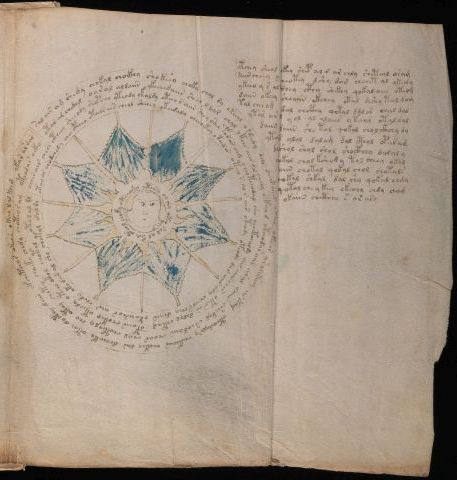

Cosmic Timing
The astronomical pages don't simply depict stars and celestial bodies — they encode temporal protocols. Different D-positions are more accessible at different times.
The sun-centered diagrams (showing a face) represent the Present Moment (D7) — the point of activation. The radiating sectors with stars indicate frequency pathways available at different cosmic alignments.
This section teaches practitioners WHEN their frequency work will be most effective, connecting personal healing to universal rhythms.
Astronomical Frequency Pattern
- 7 (Present Moment) — Immediate activation points
- 5 (Navigator) — Path-finding through cycles
- 1 (Origin) — Return/reset points in cycles
- 6 (Self) — Personal timing alignments

Astronomical Folios Gallery
Click any image to view with full frequency analysis